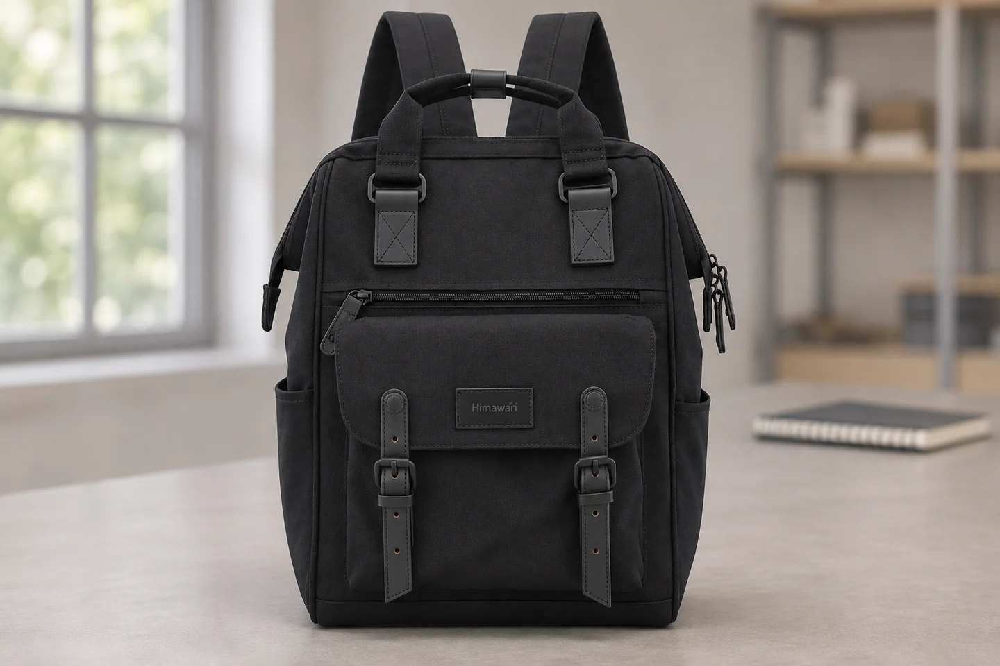
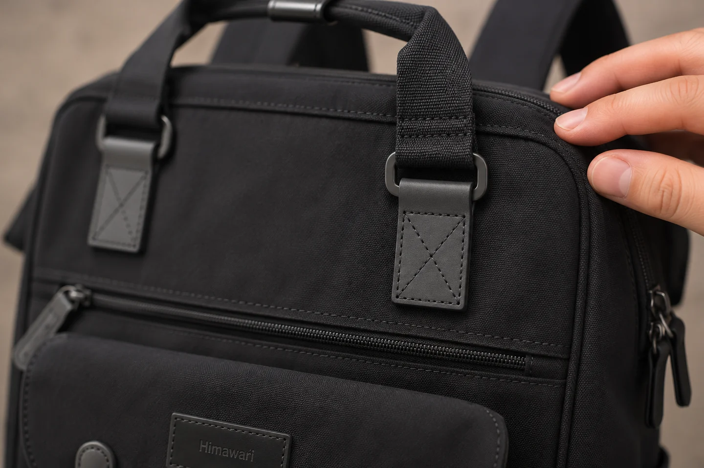
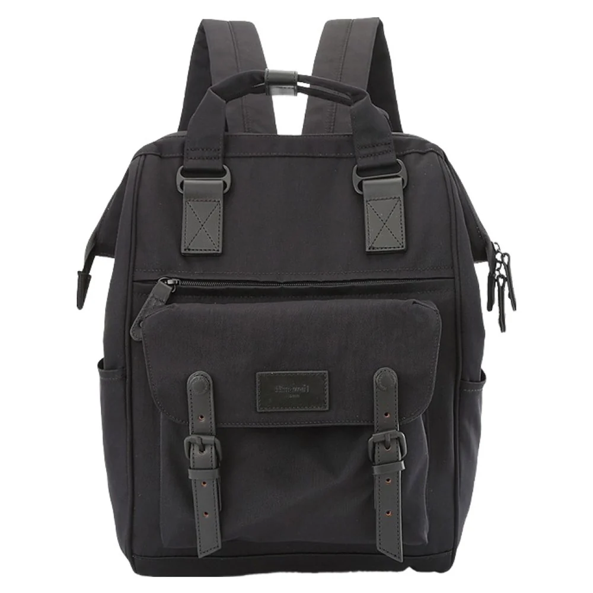

백팩 손잡이 고리가 움직일 때 같이 봐야 할 봉제선

가방 위 손잡이를 잡고 살짝 들어 올리면 손잡이 아래 부품도 같은 방향으로 따라오는 듯 보입니다. 내린 뒤에는 그중 몇 곳이 제자리에서 다른 각도로 누울 수 있습니다. 히마와리 No.9018 블랙의 사진에는 위 손잡이와 앞판 사이에 어두운 고리가 보이고 바로 아래에는 사각형 탭이 붙어 있습니다. 검은 부분이 이어져 있어 눈으로만 훑으면 붙어 있는 곳과 움직일 수 있는 곳을 한눈에 경계를 가르기 어렵습니다. 연결부 상태를 보려면 손을 놓았을 때와 잡았을 때 어느 경계가 달라졌는지부터 살핍니다.
손잡이 끝에서 고리까지
제품을 눈앞에 두고 앞판을 봅니다. 맨 위에는 두 손잡이가 짧은 띠로 모여 있습니다. 그중 앞쪽 손잡이의 양끝을 따라 내려가면 어두운 고리가 하나씩 있습니다. 좌우 두 곳은 조명에 따라 안쪽 경계가 다르게 보일 수 있습니다. 검은 앞면 아래에 길게 내려온 버클 끈은 첫 관찰에서 잠시 빼도 됩니다. 지금 따라가는 연결은 상단 손잡이에서 몸판 위쪽으로 이어지므로 아랫포켓 앞 버클과는 자리가 다릅니다.
가방을 책상에 내려놓고 윗손잡이 끝 가까이에 눈높이를 맞춰봅니다. 손잡이를 원래 눕는 범위에서 조금 세웠다가 놓으면 고리 안에서 위쪽 천이 향하는 방향을 볼 수 있습니다. 뒤쪽 어깨끈이 고리를 가리기도 합니다. 그럴 때는 가방을 살짝 돌립니다. 이때 바닥은 책상에 그대로 둡니다. 가방이 통째로 이동하면 고리에서 바뀐 부분과 몸판이 따라 돌아간 부분이 겹쳐 보입니다. 손잡이 가운데를 잡고 힘껏 당기지 않아도 연결 순서는 눈으로 따라갈 수 있습니다.

고리 밑에 붙은 사각 탭을 봅니다
고리 밑의 사각 탭은 바깥 테두리와 그 안쪽 박음질을 찾아보면 위치를 잡을 수 있습니다. 실제 No.9018 블랙의 정면 사진에서는 그 탭에 교차하는 실선이 보입니다. 손잡이를 세울 때 고리 위쪽의 천이 기울어 보이는 것과 탭의 가장자리 자체가 몸판에서 벌어져 보이는 것은 관찰할 위치가 다릅니다. 고리에 시선을 두면 바로 아래에 난 틈이나 실 끝을 놓치기 쉽습니다. 먼저 탭과 몸판이 만나는 가장자리 한 곳을 정해 손을 놓은 상태에서부터 살펴봅니다.
바로 옆으로 비추는 빛을 보면 봉제선이 도드라진 곳에 얕은 그림자가 생깁니다. 가방을 돌리면 그림자가 바뀔 수 있습니다. 검은 선 하나만 보고 박음질이 끊겼다고 정하기는 어렵습니다. 탭 가장자리의 같은 점에서 실 끝이 계속 보이거나 손잡이에 잡지 않았는데도 틈이 남으면 그 위치가 기록할 곳입니다. 눈에 띄는 곳을 손톱이나 핀으로 들춰 확인할 필요는 없습니다. 천이 움직인 범위보다 위치를 분명히 아는 편이 제품 상태를 설명하기 좋습니다.
손잡이를 내려놓을 때 경계를 한 번 더 봅니다
한쪽에서는 고리의 짧은 면이 정면으로 보이고 다른 쪽에서는 긴 면이 보일 수 있습니다. 손잡이를 한쪽으로 놓고 본 사진이라면 그 차이만으로 좌우 부품이 다르다고 말하기 어렵습니다. 가방 앞면을 평평하게 정면으로 두고 손잡이가 양쪽으로 비슷하게 놓인 상태를 만들어 두 곳을 봅니다. 그 뒤 시선을 조금 낮추면 몸판에 이어지는 봉제선의 윤곽도 비슷한 높이에서 비교할 수 있습니다. 조명이 강한 한쪽만 자세한 사진을 찍으면 그쪽에만 흔적이 있는 듯 보일 수 있으니 비교 사진의 방향도 맞춰 둡니다.
실제 제품 사진은 어느 선과 고리가 원래 있던 것인지 찾는 데 도움이 됩니다. 내 가방에서는 같은 자리를 잡기 전과 놓은 뒤에 비교해 봅니다. 고리가 돌아간 자리에서 위쪽 천이 잠시 접힐 수 있습니다. 손잡이가 돌아가면 접힌 자리가 바뀔 수도 있습니다. 가방을 들어 옮긴 직후에 한쪽 탭이 돌아가 보였다면 바닥을 다시 받치고 손잡이를 놓은 상태에서도 같은 부분이 바뀌었는지 확인해 보세요. 고리에서 이어지는 짧은 천은 방향을 바꿀 수 있고 몸판 쪽 가장자리는 박음질을 따라 보입니다. 같은 지점을 바라본 채 손잡이를 올렸다가 놓으면 어디가 함께 움직이는지 구별하기 쉽습니다. 고리에서 보이는 면이 바뀌어도 앞판은 그대로일 수 있습니다. 탭 가장자리가 움직였나요? 손을 놓은 뒤에도 풀린 실이 같은 자리에 보이는지 살핍니다.

수선 문의에는 움직이는 곳과 남는 곳을 적습니다
확인이 필요할 때에는 손잡이 연결부의 전체 사진과 문제로 보이는 탭을 가까이 찍은 사진을 남깁니다. ‘손잡이 고리가 헐거워요’라는 말에는 고리의 여유를 말하는지 탭이 몸판에서 들리는지를 구분할 단서가 빠져 있습니다. ‘정면에서 오른쪽 위 고리 아래, 탭의 바깥 모서리에 가방을 내려놓아도 실 끝이 보입니다’처럼 자리와 현상을 묶으면 어디를 봐야 할지 분명합니다. 잡아 세웠을 때에만 화면에 보이는 변화라면 어떤 손동작에서 보이는지도 덧붙입니다. 실을 자르거나 눌러 붙인 뒤의 사진만 남기면 처음 상태가 사라집니다.
손잡이 끝에서 고리를 찾습니다. 그 아래 탭이 몸판과 만나는 경계로 시선을 옮깁니다. 가방이 앉은 자리에서 손잡이를 놓아 본 뒤에도 탭에 관찰할 변화가 남는다면 그곳부터 사진으로 남깁니다. 움직임이라는 한 단어에 손잡이 전체를 묶지 않으면 어느 부품이 돌아갔고 어느 봉제선에 변화가 보였는지를 말하기가 쉬워집니다. 수선이 필요한지는 그 기록과 제품 안내를 들고 확인할 수 있습니다.